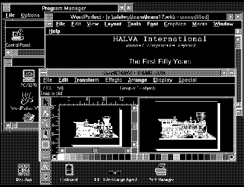

Windows Applications Running under OS/2 Version 2.0
We apologize for the picture quality. The original was not available.
[Back: User Definitions for other Applications]
[Next: Single Windows Application Running under OS/2 Version 2.0]